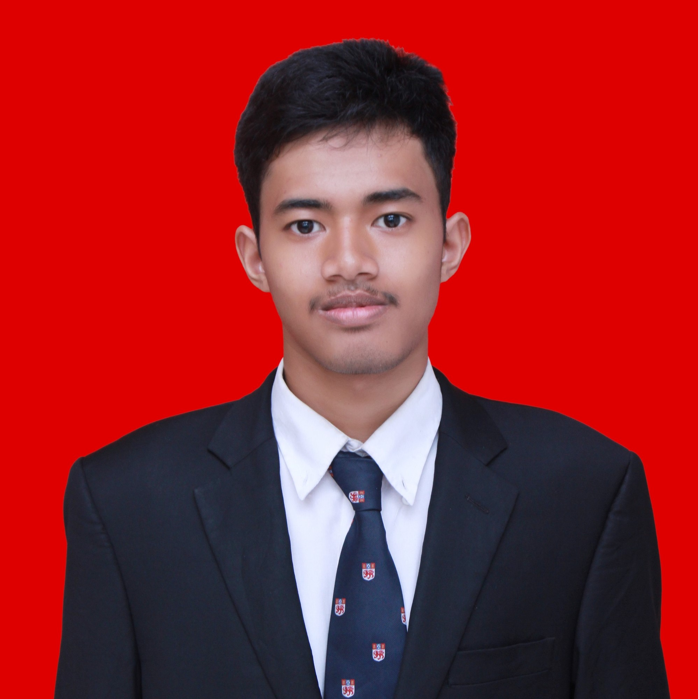

MOCHAMMAD NOVRITSA ZULFIKAR
Surabaya, 26th November 1997
Sidosermo Indah 10/27, Surabaya
+6285852081609
novritsazulfikar@gmail.com
EDUCATION
2014 - 2018
INSTITUT TEKNOLOGI SEPULUH NOPEMBER SURABAYA
GEOPHYSICAL ENGINEERING
GPA : 3.17
WORK EXPERIENCES
Oct 2018 - Mar 2019
Part of Project Management Division
Erdmaze Geotourism Travel Agent
Mar 2019
Acquisition Team of Geochemical Survey
Geowave
Jul 2019 - Nov 2019
Intern of Teaching Learning Assessor
Project Child Indonesia
ORGANIZATION EXPERIENCES
June 2015 - May 2016
Staff of Social Development Department
Himpunan Mahasiswa Teknik Geofisika (HMTG)
June 2016 - May 2017
Head of Social Development Department
Himpunan Mahasiswa Teknik Geofisika (HMTG)
May 2016 - May 2017
Head of Syiar Keumatan Department
Islamic Bureau of Geophysical Engineering Al Ardh
June 2017 - May 2018
Vice Director of Badan Pelayan Umat (BPU)
Jamaah Masjid Manarul Ilmi (JMMI)
COMMITTEE & VOLUNTEER EXPERIENCES
2015
Chairman of Surabaya Tersenyum
Himpunan Mahasiswa Teknik Geofisika (HMTG)
2015
Event Coordinator of Geocare
Himpunan Mahasiswa Teknik Geofisika (HMTG)
2015
Team of Orgaizing Committee of Ramafhan di Kampus (RDK) 37
Jamaah Masjid Manarul Ilmi (JMMI)
2016
Chairman of Kelas Inspirasi Kebumian
Himpunan Mahasiswa Teknik Geofisika (HMTG)
2016
Pengajar Tangguh #3 ITS Mengajar
ITS Education Center (IECC) BEM ITS
2016
Coordinator of Ahwa Al Ardh Geophysical Engineering
Islamic Bureau of Geophysical Engineering Al Ardh
SEMINARS
2017
Basic Media Schooling
Himpunan Mahasiswa Teknik Geofisika (HMTG)
2018
Surveyor Training
Lembaga Penelitian dan Pengembangan (LPPM) ITS
2019
Artificial Intelligence Digital Talent Scholarship 2019
Indonesia's Ministry of Communication and Informatics
ACHIEVEMENTS
Sept 2018
Oral Presenter of Pertemuan Ilmiah Tahunan Himpunan Ahli Geofisika Indonesia (PIT HAGI)
Himpunan Ahli Geofisika Indonesia (HAGI)